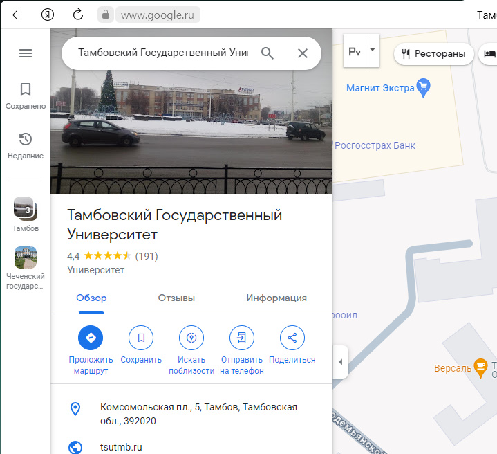
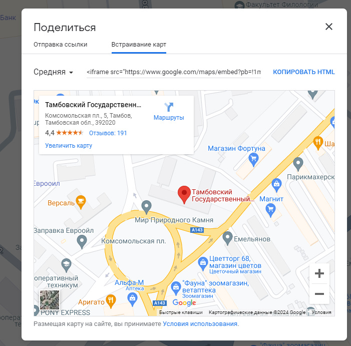

Пример №2

Первым делом нужно зайти на сам сайт google maps https://www.google.ru/maps/
Там через поисковое меню нужно найти нужное нам учреждение, либо же его улицу или метку
Тут нас интересует круглая кнопка "Поделиться", кликаем на нее и там нужно открыть вкладку "Встраивание карт"
Копируем длинный HTML код и встраиваем его в наш сайт, как обычно между двумя тегами body
Примерно в само конце этого кода можно увидеть такие строчки как width="600" height="450", которые соответственно отвечают ширину и высоту данного элемента, давайте изменим эти параметру, чтобы карта была немного побольше, пусть будет width="800" height="650"